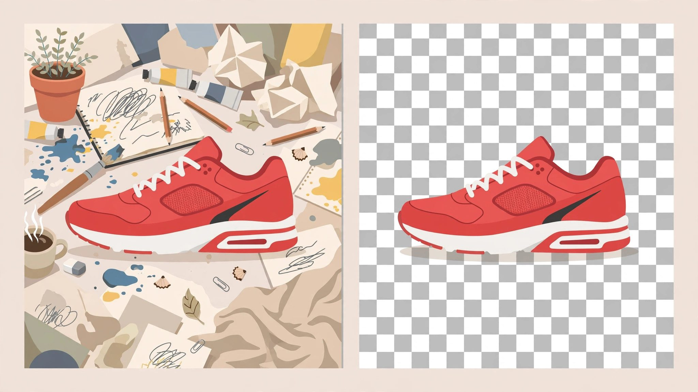

Free AI Background Remover No Sign Up: 5 Tools Compared (2026)
Removing an image background used to mean an afternoon in Photoshop with the pen tool. Now it's a one-click AI job — but half the "free" tools ambush you with a sign-up wall right when you hit download. This guide compares 5 background removers whose free tiers are documented as usable without creating an account, so you know exactly what you get before you upload anything.

One honest note up front: free tiers change constantly. A tool that's account-free today may add a login gate next quarter. Everything below reflects each tool's publicly documented free tier as of October 2026 — if a download button suddenly demands your email, that page is out of date and the tool changed its terms, not your memory.
What actually matters in a background remover
Before the tool list, here's how to judge one in under a minute. Four things separate the good from the annoying:
Edge quality. Hair, fur, translucent fabric, and thin straps are where cheap removers fall apart. A good model keeps wispy edges instead of chewing them into a halo or, worse, deleting half an ear.
Output resolution. Many free tiers process your 4000px photo and hand back a 500px thumbnail. Fine for a marketplace listing preview, useless for print. Check what pixel dimensions the free download actually is.
Watermarks and sign-up traps. The classic bait: the preview looks perfect, then the download button says "create a free account." A tool only counts as "no sign up" here if the documented free path completes in the browser with no account.
Usage limits. "Free" might mean 1 image, 3 per day, or unlimited at low resolution. For occasional use any of these is fine; for batch work the limit is the whole story.
How this comparison was put together
Rather than run a single afternoon of hands-on tests and pretend the results are timeless, this guide is built from each tool's official pricing and feature pages, plus widely reported user experience. Free tiers are a moving target, so the emphasis is on the structural facts that tend to be stable: whether an account is required, whether the output is watermarked, and what the resolution caps are. When a detail is ambiguous on the official site, it's flagged as such instead of guessed.
1. remove.bg — the category standard
If you've ever searched for background removal, you've met remove.bg. It's the reference implementation most newer tools are measured against, and its model quality — especially on hair and complex edges — remains the benchmark.
No-sign-up access: The web app processes images directly in the browser without requiring an account. Free downloads are provided at reduced resolution (the site documents a free tier separate from its credit-based HD downloads).
Best for: One-off removals where edge quality matters most — portraits, product shots with fine detail. If the free resolution is enough for your use case, there's little reason to look further.
Watch out for: High-resolution downloads sit behind the paid credit system. For social media and web use the free output is usually fine; for print, budget accordingly.
2. Pixlr Remove BG — the editor's sidekick
Pixlr is a full browser-based photo editor that happens to include a dedicated background remover. The advantage is the workflow: remove the background, then keep editing — touch up edges, add a new backdrop, export — without switching tools.
No-sign-up access: Pixlr's web tools are documented as usable without an account for basic functions, including background removal. Some advanced features and higher-resolution exports may prompt for a free account.
Best for: People who need more than just a cutout — compositing the subject onto a new background, quick marketing graphics, thumbnail work.
Watch out for: As an editor first and a remover second, its automatic cutout can be slightly less refined than a dedicated tool on tricky edges. The manual refine brush is there for exactly that.
3. Fotor — the template-heavy option
Fotor bundles background removal into a broader design platform with templates for social posts, ads, and e-commerce listings. If your end goal is "product photo on a clean backdrop for my store," Fotor's pipeline from removal to finished listing image is the shortest.
No-sign-up access: Fotor documents a free background remover usable in the browser. HD exports and batch processing are the usual upsell points where an account or subscription enters the picture.
Best for: Sellers and marketers who want the removed background replaced with a studio-style backdrop in the same session.
Watch out for: The free tier's output resolution and the frequency of upgrade prompts are the two things to verify before committing to a workflow here.
4. Slazzer — the API-friendly one
Slazzer positions itself for developers and bulk users, with an API alongside the web tool. Its free tier is explicitly structured around a small number of free images — enough to evaluate quality before deciding anything.
No-sign-up access: The site documents free image processing without mandatory account creation for the entry tier. The free allowance is limited in count rather than gated behind registration.
Best for: Testing whether automated background removal fits into a larger workflow, or handling a small batch where each image matters.
Watch out for: The free image count is small by design — this is a trial-shaped free tier, not an unlimited utility.
5. Erase.bg — the straightforward free tool
Erase.bg keeps the pitch simple: upload, remove, download. It markets itself on not requiring sign-up for the core function, which is exactly the promise this guide is filtering for.
No-sign-up access: Documented as usable without an account for standard background removal, with output available directly after processing.
Best for: Quick, no-fuss removals where you don't want to learn an editor or evaluate a platform — the digital equivalent of a single-purpose kitchen gadget.
Watch out for: Single-purpose tools live and die by their model's edge quality; run your hardest test image (hair, fur, or mesh fabric) through it first before trusting it with real work.
Side-by-side comparison
| Tool | Account needed? | Free output | Strength |
|---|---|---|---|
| remove.bg | No (basic) | Reduced resolution | Best edge quality |
| Pixlr | No (basic) | Standard, editor included | Edit after removal |
| Fotor | No (basic) | Standard, templates | E-commerce workflow |
| Slazzer | No (trial count) | Limited free images | API / bulk path |
| Erase.bg | No | Standard | Simplest flow |
"Basic" means the core removal-and-download flow is documented as account-free; HD exports, batch tools, and API keys are where accounts typically appear across all five.
Which one should you actually use?
Just need one clean cutout right now: remove.bg or Erase.bg. Upload, download, done.
Making thumbnails or ad creatives: Pixlr or Fotor, because you'll want to composite the cutout onto something immediately — and if you're generating the source images with AI in the first place, our tested roundup of free AI image generators with no sign up pairs naturally with this workflow: generate, cut out, composite, all without creating a single account.
Building it into an app or pipeline: Slazzer, for the API. Evaluate the free images, then decide if the volume justifies credits.
Portraits with difficult hair: remove.bg's model is still the safest bet — edge quality is the one thing worth optimizing for when the subject is a person.
FAQ
Do free background removers keep my uploaded photos?
Policies differ. Most major tools state that uploaded images are deleted after a retention window (commonly cited as around 30–60 days, sometimes less). If the photo is sensitive, check the specific tool's privacy policy before uploading — "free" and "private" are independent variables.
Why is my cutout missing parts of the subject?
Usually low contrast between subject and background (white shirt on white wall), or thin semi-transparent areas the model classified as background. Tools with a manual refine/erase-restore brush (Pixlr has one) let you paint back what the AI removed.
Can I remove backgrounds without any AI tool at all?
Yes — GIMP and Photopea (a free browser-based Photoshop alternative) both do it manually with selection tools. It's slower but fully offline and private. AI removers just compress a 20-minute job into 5 seconds.
Will the free tier disappear?
Free tiers shrink over time across the whole industry — that's the honest trend. Bookmark two tools from this list, not one, so a single terms-of-service change doesn't strand your workflow.
If background removal is just one step in a bigger no-sign-up toolkit you're assembling, our roundup of 12 no-signup AI agents covers chatbots, writers, and researchers that follow the same principle: useful first, account never required. Pair a cutout tool from this guide with one of those agents and most everyday AI tasks are covered without a single registration form.